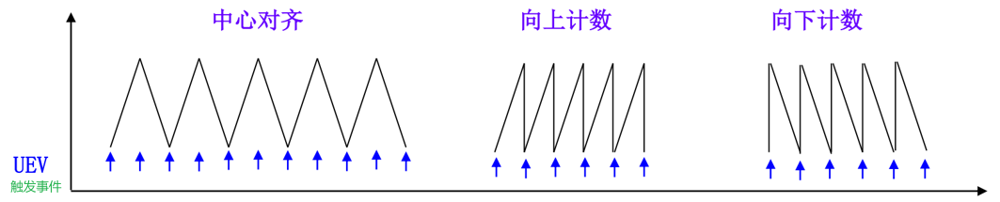

第16章、基本定时器
一、定时器基本特性
1.概述
首先说一下什么是定时器，定时器是一种用于定时的外设，有点官方，简单点讲其实就相当于与闹钟，只不过我们所提到的定时器和闹钟又有一些不同，因为这个定时去除了定时的功能以外，他还有其他功能，下面我们会详细的介绍的。
定时器种类
- 基本定时器：只有定时的功能和ADC/DAC触发的功能。
- 通用定时器：除了包含基本定时功能外，还有一些其他复用功能。
- 高级定时器：比通用定时器的功能更加丰富，这里就行暂时不提，后面17章会讲到。
包含关系

- 复用功能
首先，不同芯片中一般都包含了上述三种类型的定时器，但是不太类型的定时器在不同的芯片中的数量是不同的，这得查手册才能知道具体有哪些定时器。但是包含的复用功能一般都如下所示：
🅰️ 定时
◀️ ADC和DAC开始转换触发
🅰️ 输入捕获：脉冲计数、上升沿或下降沿时间检测、PWM输入检测
◀️ 输出比较：脉冲输出、步进电机控制
🅰️ 脉冲宽度调节PWM：电压输出控制、直流减速电机控制、直流无刷电机控制
◀️ 单脉冲模式输出
🅰️ 编码器接口、霍尔传感器接口
高级定时器和通用定时器的高级功能是需要配合外部引脚使用的，并且大部分通道所对应的引脚不止一个。
2.时钟树
时钟树是非常重要的，是我们后面在计算和配置频率所绕不开的一个话题，但是不同的定时器所对应的时钟频率不一，这我们就得查看数据手册自己去找了。不过定时器一般都是搭载在APB总线上的，外设一般都连在APB总线上。至于是APB1还是APB2，只有查过手册才知道。下图是从
F4的数据手册中找到的一张图。

这里要注意一个点，就是定时器模式下的时钟频率和外设时钟频率不一样，一般定时器时钟频率是外设时钟频率的2倍。

3.计数方式
定时器计数方式分为三种：
- 递增：向上计数
- 递减：向下计数
- 递增/递减：中心对齐

计数的区间
- 一般情况下，计数的区间为
- 一般情况下，计数的区间为
通常情况下基本定时器的计数模式为向上计数。
有的芯片是不存在基本定时器的，只有通用和高级两种定时器
二、基本定时器原理
1.概述
基本定时器的功能主要有：
- 基本定时功能，当累加的时钟脉冲数超过预定值时，能触发中断或者触发DMA请求。
- 专门用于驱动数模转换的DAC
这里我以F4芯片中的基本定时器来进行讲解，原理大同小异。
2.原理

框图讲解
时钟源：
定时器要实现定时，那么首先需要时钟源，基本定时器的时钟源只能来自内部时钟，是由CK_INT提供。定时器的时钟不是直接来自APB1或APB2，而是来自输入为APB1或APB2的一个倍频器。
当TIM 6和TIM 7的控制寄存器1（ TIMx_CR1 ）的CEN位置1时，内部时钟即向预分频器（功能框图中的第4部分）提供时钟，也就是启动基本定时器。
触发内部事件：
触发控制器是专门用于控制定时器输出一个信号，这个信号可以输出到STM32内部其他外设（作为其他外设的一个输入信号）。基本定时器的触发输出功能专门用于ADC/DAC转换触发启动。
控制器：
定时器控制器，包含有一个触发输出控制器。控制器通过定时器配置寄存器（TIMx_CR）实现对定时器功能配置。控制器实现对定时器的复位、使能以及计数的控制，更简单理解，就是它控制CK_INT时钟是否可以正常传输到CK_PSC预分频器内。
计数器：
基本定时器只能递增（向上计数），在定时器使能后（CEN置1），计数器COUNTER根据CK_CNT频率向上计数，即每来一个CK_CNT脉冲，TIMx_CNT值就加1，当TIMx_CNT值与TIMx_ARR的设定值相等时就自动生成更新事件（也可以产生DMA请求、产生中断信号或者触发DAC同步电路），并且TIMx_CNT自动清零，然后重新开始计数，不断重复上述过程。因此我们只要设定
TIMx_PSC和TIMx_ARR这两个寄存器的值就可以控制事件生成时间。对应的就是程序中定时器预分频设置和定时器周期。我们看，这里的ARR和PSC两个寄存器都是存在影子寄存器的，也就是说，他不像其他寄存器一样，修改完后就直接生效，在这里的TIMx_CRx中存在ARPE这一位，用于设置ARR是否立即生效，这一位是不影响PSC寄存器的。PSC只有在发送更新事件之后才会进行更新数值。
三、Cubemx配置
注：我们选择的芯片是F4IGTx进行讲解。
- 先配置RCC

根据实际情况配置时钟树

- 配置基本定时器，
按照我的配置来

- 使能中断，并配置优先级

- 保存工程并生成
四、代码分析
- TIM时基配置结构定义
结构体中的一些变量不一定会用到，也并不是都会有
x
1/**2 * @brief TIM时基配置结构定义3 */4typedef struct5{6 uint32_t Prescaler;/* 定时器预分频,设置PSC，取值在0x0000~0xFFFF */7 uint32_t CounterMode;/* 定时器计数方式 */8 uint32_t Period; /* 定时器周期,设置ARR，取值在0x0000~0xFFFF */9 uint32_t ClockDivision; /* 时钟分频，基本定时器用不到 */10 uint32_t RepetitionCounter; /* 重复计数器，属于高级定时器的，控制输出的PWM个数 */11 uint32_t AutoReloadPreload; /* 是否预装载ARR */12} TIM_Base_InitTypeDef;- TIM时基句柄结构定义
x
1/**2 * @brief TIM时基句柄结构定义3 */4typedef struct5{6 TIM_TypeDef *Instance; /* 寄存器基址 */7 TIM_Base_InitTypeDef Init; /* TIM时基配置结构定义 */8 HAL_TIM_ActiveChannel Channel; /* 定时器通道的选择，有四个通道。*/9 DMA_HandleTypeDef *hdma[7]; /* 定时器DMA相关。 */10 HAL_LockTypeDef Lock; /* 资源锁机制 */11 __IO HAL_TIM_StateTypeDef State;/* 定时器操作的状态 */12} TIM_HandleTypeDef;- 初始化
x
1// 初始化定时器2void MX_TIM6_Init(void);3// 初始化参数4HAL_StatusTypeDef HAL_TIM_Base_Init(TIM_HandleTypeDef *htim);5// 设置定时器优先级6void HAL_TIM_Base_MspInit(TIM_HandleTypeDef* tim_baseHandle);7// 禁止中断8void HAL_TIM_Base_MspDeInit(TIM_HandleTypeDef* tim_baseHandle);- 打开定时器中断
x
1/* Time Base functions ********************************************************/2HAL_StatusTypeDef HAL_TIM_Base_Init(TIM_HandleTypeDef *htim);3HAL_StatusTypeDef HAL_TIM_Base_DeInit(TIM_HandleTypeDef *htim);4void HAL_TIM_Base_MspInit(TIM_HandleTypeDef *htim);5void HAL_TIM_Base_MspDeInit(TIM_HandleTypeDef *htim);6/* Blocking mode: Polling */7HAL_StatusTypeDef HAL_TIM_Base_Start(TIM_HandleTypeDef *htim);8HAL_StatusTypeDef HAL_TIM_Base_Stop(TIM_HandleTypeDef *htim);9/* 打开中断的 */10HAL_StatusTypeDef HAL_TIM_Base_Start_IT(TIM_HandleTypeDef *htim);11HAL_StatusTypeDef HAL_TIM_Base_Stop_IT(TIM_HandleTypeDef *htim);12// 调用13HAL_TIM_Base_Start_IT(htimx);定时器中断时事件更新触发。所以当产生中断时，会进入 stm32fxxx_it.c文件找中的 Timx_XXX_IRQHandler()函数，这个函数会调用 HAL_TIM_IRQHandler()函数。

- 找到对应的回调函数
x
1/**2 * @brief 非阻塞模式下经过的时间段回调3 * @param TIM_HandleTypeDef *htim4 * @retval None5 */6__weak void HAL_TIM_PeriodElapsedCallback(TIM_HandleTypeDef *htim)7{8 /* 防止未使用的参数编译警告 */9 UNUSED(htim);10 /* NOTE : 当需要回调时，不修改此函数,只需要在用户文件中定义。 */11}